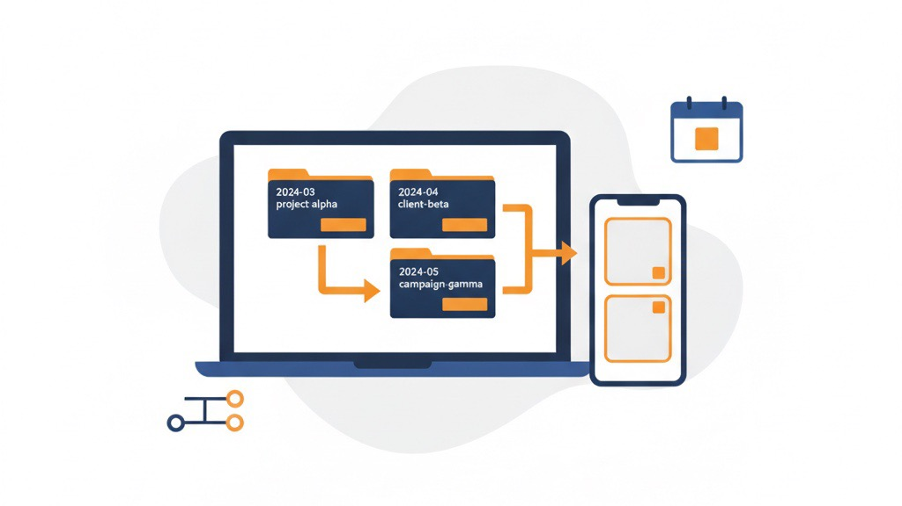
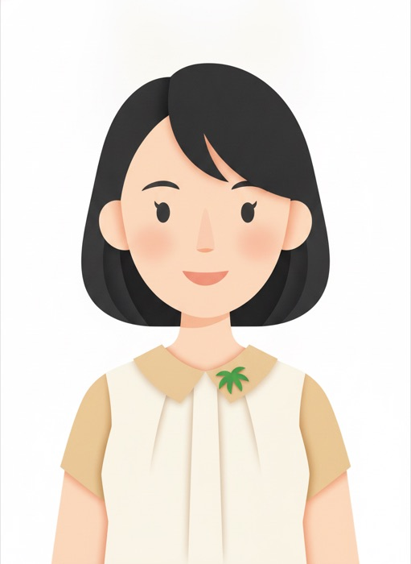
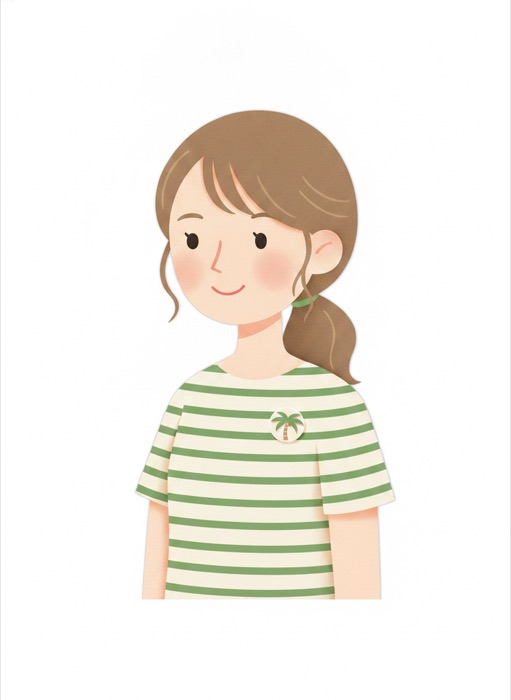

Amazon / EC / 業務DX — Osaka
大阪・池田で、自社ブランドを2つ運営しています。
同じことを、Amazon運用・EC・業務改善の支援でもやっています。
じっくり話したい方は 30分のオンライン相談 も選べます。
朝刊レポートAPP7:00
☀️ 昨日：売上 ○○○ ／ 広告費 ○○ ／ 利益 ○○
📈 7日トレンド：3日連続で改善 ↑
📦 在庫注意：1商品（残り○日）→ 攻め自動停止
🤖 昨日の自動調整：12件（すべて安全弁の範囲内）
✅ 異常なし。判断が必要な項目は今日はありません。
※ 自社・支援先で実際に毎朝動いている自動レポートです（数値はマスク）。
数字を見える化
美容サロンの意思決定を後押し
（判断・実行はお店ご自身）
3商品で主力事業化
自社ブランドを複数運営する
“売っている側”の当事者
EC・店舗・現場DX
業種を問わない
仕組み化・見える化の実績
Our Own Brands
← 横にスワイプ →
「どう知ってもらうか」に挑戦中の自社フレグランスブランド。公式サイト・SNS発信・コンテンツSEO・ECまで内製で運用し、認知の作り方そのものを自分たちで検証しています。
公式サイトを見るわずか3商品で会社の主力事業に育てた自社ブランド。商品企画も、画像も、広告も、在庫も、外注せず自分たちの手で。ここで実際に効いた施策を、お客様の事業に合う形にして持ち込みます。
公式ストアを見るBusiness Improvement Insights
実際にやった業務改善を、他社でも使える「型」として公開しています。
← 横にスワイプ →



投入候補をTier（S/A/B/C＋手動マーク）で仕分け、稼働中は毎朝Slackに“悪化が見える表”が自動で届く。日次の見張り・経過観察テーブル・週次の検証ループを、通知イメージ付き（数値は伏せ）で公開します。
記事を読む
少額のSaaSが積み上がった固定費を、全課金の洗い出し→4つの判定→解約・返金交渉→棚卸しの仕組み化まで。重複課金の返金や過剰プランの整理を、自社でやった手順で公開します。
記事を読む
Amazon FBAの在庫評価を、レポートAPIで自動取得→原価マスタと突合→評価額を算出→記録・Slack通知まで自動化。APIのレート制限でつまずいた設計の学びも公開します。
記事を読む
広告が一切打てないニッチ市場に新規参入するか否か。「そもそも市場は在るのか」を海外の実売データで確かめ、原価を逆引きし、提案書を削り込んで“小さく賭けて早く見極める”計画に落とすまでの意思決定を、金額は相対値で公開します。
記事を読む自然検索順位・価格・BSRを毎日「同じ条件で」追う理由。目視チェックをやめて自動追跡に仕組み化した意思決定と、取得→記録→通知の設計、海外IPで圏外になる等のつまずきを公開します。
記事を読む
始めた経緯と、実際に「回る」仕組みのリアル。動画→クリエイター→購入の構造、バズ動画の型、ショップ評価スコア（SPS）と初期販売数量がなぜ効くのか――運用で得た学びを実務目線で公開します。
記事を読む
成功談ではなく、失敗をどう型として蓄積し、次の意思決定に差し込むか。少人数の会社が失敗を組織の資産に変える方法を公開します。
記事を読む
毎週の改善ループと毎日の早期警告で「気づいたら赤字」を防ぐ仕組み。4レンジ分析・入札ルール・危険シグナルを表とグラフで具体的に公開します。
記事を読む
モール精算データから仕訳を自動で組み立て会計ソフトへ投入する仕組みを、仕訳イメージ図とつまずきポイントの表つきで公開します。
記事を読む
お礼・使い方・再購入の声かけを自動ステップ配信に置き換える方法を、配信フロー図と「嫌われない設計」の表つきで解説します。
記事を読む
広告を止めても来る入口の作り方。キーワード選び・記事の型・購入導線・順位の見える化までを、表と推移グラフで具体的に公開します。
記事を読む
専用マシン・時間帯リトライ・重複防止・別マシンからの見張り。「静かに止まる」事故を防ぐ4つの仕掛けを、全体図つきで解説します。
記事を読む
すでに回っていた知人の現場管理を、それでも作り替えた理由。どんな手札を比べ、なぜその設計を選んだか――成果自慢ではなく、課題への向き合い方を公開します。
記事を読む
本業のEC・Amazon運用で使う「まず市場があるか確かめ、数字で原因を絞り込む」考え方を、別業種のサロンの数字の見える化に適用した実例。売上は相対指数で示し、結果ではなく向き合い方そのものを公開します。
記事を読む
診断を成約の罠にしない、という設計思想。質問の選び方・結果の返し方・やらないと決めたこと――煽らず見極めてもらう導線の作り方を解説します。
記事を読む
集客経路を分解し、HP・LINEを連携させて「毎朝、次の一手が分かる」状態をどう作るか。中小事業者がすぐ真似できる見える化の手順を解説します。
記事を読む
少人数の会社が人を増やさず事業を回すために自動化した実物リストと、業種を問わず使える「自動化の型」5ステップを公開します。
記事を読む
やりたい配信やFLEXメッセージのデザインを日本語で指示するだけで形にできる柔軟さを、手札の比較表とFLEXの実例つきで解説します。安さではなく「自在さ」の話です。
記事を読む
問題ゼロではなく、起きたときの向き合い方で信頼を積む。代表の原体験と、困難に出会ったときの5ステップの型。
読む
成果はスキルだけで決まらない。会社は「見たい景色」の解像度で決まる――意識と解像度の話を、身近な例で。
読む
勘や努力への依存をやめ、自分が不在でも回る形に。再現性が文化。AI時代に会社を強くする資産という考え方です。
読む

FAQ
もちろんです。オンライン30分からお話を伺います。いきなり契約や費用が発生することはありません。費用や進め方は、ご相談のあとに具体案とあわせてご提示し、ご納得いただいてからで構いません。
大丈夫です。「何が手間か」「どの数字が見えていないか」を一緒に洗い出すところから始めます。仕組みに落とせる部分を見つけるのが私たちの仕事なので、整理できていない状態でこそご相談ください。
店舗・中小企業を中心に、業種を問わずご支援しています。実際に、美容サロンや建設・公共事業の現場（デズラ）など、「数字が見えない・集計が手作業」という共通のお困りごとを仕組み化で解決してきました。
課題の内容や仕組みの範囲によって変わるため、ご相談のうえで具体案とあわせてお見積りします。最初から大きく作り込むのではなく、効果の出やすいところから小さく始めることも可能です。
はい。私たち自身が現役のAmazonセラーで、運用支援・教育（チームの自走支援）まで対応しています。料金例や導入事例は Amazon支援ページ にまとめています。
オンラインで全国対応しています。大阪府内および近隣のお客様へは、必要に応じて訪問し、より密に連携しながら進めます。
Company / Founder
Team
現場を支えるメンバーです。

美延
デザイナー兼出荷担当

守殿
品質管理者兼充填担当
Overview
| 会社名 | 合同会社ヤシノミ |
|---|---|
| 代表 | 四宮 慶人 |
| 設立 | 2023年4月 |
| 体制 | 3名（大阪近郊は訪問対応／全国オンライン） |
| 事業内容 |
Amazon・EC運用支援
業務改善・DX（仕組み化・自動化）
Web・公式LINE構築
商品ページ・画像制作
自社ブランド運営
|
| 登録番号 | T7120903004525適格請求書発行事業者 |
Access
〒563-0032 大阪府池田市石橋1-15-33
Works
Amazonの商品画像・パッケージ・チラシから、事務所で動く3Dプリンターの作品まで。「まず自分たちで作ってみる」が私たちのやり方です。
For Existing Clients
いつもありがとうございます。ご連絡・ご相談はこちらからどうぞ。
※レポート閲覧・専用ダッシュボード等の窓口は今後ここに集約予定（仮）
Contact
「何が詰まっているか分からない」段階で大丈夫です。
LINEのメッセージひとつでも、30分のオンライン相談でも。仕組みに落とせる部分を一緒に見つけます。